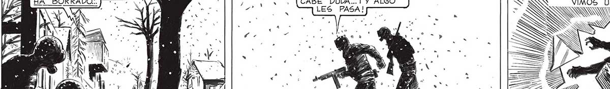

SONS MIENTRAS CORRÍAMOS ENTRE$ y SON : > ES SON SOBREVIVIENTES, NO CABE DUDA...¡ Y ALGO LES PASA! “CAMINITO QUE EL TIEMPO] - 49 HA BORRADOS. Pas KA ó, (LA BOTELLA SE Hal] 1/ZO AÑICOS EN EL. y,” Y, AFIRMADO. LA MÚS-, SS CA RESONO' MAS ' ' K CORRIMOS HACIA LA CASA «. FUERTE QUE ANTES, «DEL VENTANAL. ¡ESTOY HARTO! 2 J¡IHARTO! ¡NO UNO AGUANTO uo [ ¡NO SIGAS JUAN! - | ¡AHÍ SALE UNO! [WN ¡Y ESTA ARMADO!] ' he YE N SORDO ESTRÉPITO YLA” MÚSICA SE CORTO. ¡BASTA DE COPOS! ¡SE VA A KOMPEK MB PARECE LOCO... y EL ALMA! Ea ¡BASTA DE LUCES! a . - AN ERE ¡BASTA DE TODO! _ y 3 3 ] A | Ta
